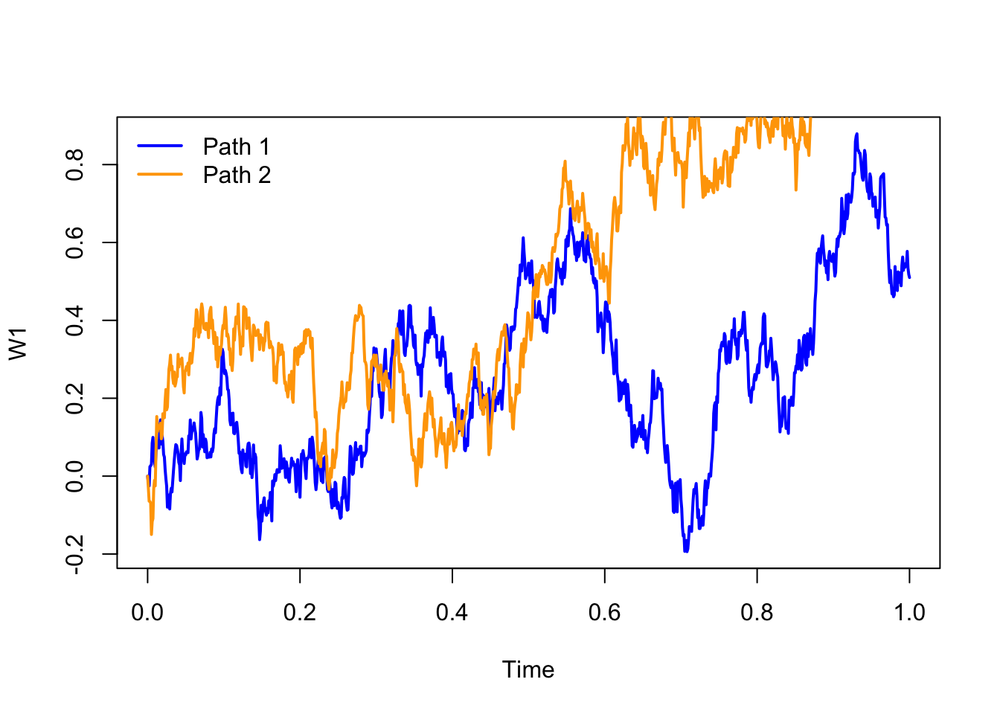

2 Introduction to stochastic differential equations
2.1 Wiener process
Definition 2.1 (Filtration) Let \(X = (X(t), ~ t \in T)\) be a stochastic process defined on the probability space \((\Omega, \mathcal{F}, P)\), with index set \(T = [0, +\infty[\). A family of sub-\(\sigma\)-algebras of \(\mathcal{F}\), such that for \(s \leq t\) we have \(\mathcal{F}_s \subset \mathcal{F}_t\), is called a filtration.
The natural filtration of the process \(X\) is the family
\[
\left(\mathcal{F}_t = \sigma\big(X_s : 0 \leq s \leq t\big), \; t \in T\right),
\]
formed by the \(\sigma\)-algebras generated by the process \(X\) up to time \(t\).
A stochastic process \(X = (X(t), ~ t \in T)\) is adapted to the filtration \((\mathcal{F}_t, t \in T)\) if, for every \(t \in T\), the random variable \(X(t)\) is \(\mathcal{F}_t\)-measurable; that is, the inverse images of sets \(B \in \mathcal{B}\) lie in \(\mathcal{F}_t\).
\(\,\)
Definition 2.2 (Standard Wiener Process (or Brownian Motion)) A standard Wiener process (or Brownian motion) is a stochastic process \(W = (W_t)_{t \geq 0}\) defined on a probability space \((\Omega, \mathcal{F}, P)\), which satisfies the following properties:
Initial condition: \(W_0 = 0\) almost surely, that is,
\[ P(W_0 = 0) = 1; \]Gaussian increments: For any times \(0 \leq s < t < \infty\), the random variable \(W_t - W_s\) is normally distributed with zero mean and variance \(t - s\), i.e.,
\[ W_t - W_s \sim \mathcal{N}(0, t - s); \]Independent increments: For every \(n \in \mathbb{N}\) and any increasing sequence of times \(0 \leq t_0 < t_1 < \dots < t_n\), the increments
\[ W_{t_1} - W_{t_0}, \quad W_{t_2} - W_{t_1}, \quad \dots, \quad W_{t_n} - W_{t_{n-1}} \]
are independent random variables;Continuous paths: With probability 1, the map \(t \mapsto W_t(\omega)\) is continuous for every \(\omega \in \Omega\), that is,
\[ P\left( W \in C([0, \infty[) \right) = 1, \]
where \(C([0, \infty[)\) denotes the space of continuous functions on \([0, \infty[\).
\(\,\)
Definition 2.3 Consider a function \(f:[0,t] \rightarrow \mathbb{R}\) and a sequence of partitions \(\mathcal{P}_n = \{t_0^n, t_1^n, \ldots, t_n^n\}\) of the interval \([0,t]\), with \(0 = t_0^n < t_1^n < \cdots < t_n^n = t\) for each \(n \in \mathbb{N}\), such that \[ \delta_n = \max_{0 \leq i \leq n-1} |t_{i+1}^n - t_i^n| \to 0 \quad \text{as } n \to +\infty. \]
The variation of the function \(f\) on the interval \([0,t]\) is defined by \[ V_f([0,t]) = V_f(t) := \lim_{n \to +\infty} \sum_{i=0}^{n-1} |f(t_{i+1}^n) - f(t_i^n)|. \]
The function \(f\) is said to have finite variation on the interval \([0,t]\) if \(V_f(t) < +\infty\).
The function \(f\) is said to have bounded variation on the interval \([0,t]\) if \[ \sup_{u \in [0,t]} V_f(u) < k, \quad \text{for some } k > 0. \]
The function \(f\) is said to have quadratic variation on the interval \([0,t]\) if the limit exists and is finite: \[ V_f^2(t) := \lim_{n \to +\infty} \sum_{i=0}^{n-1} |f(t_{i+1}^n) - f(t_i^n)|^2. \]
\(\,\)
In stochastic processes, and particularly in stochastic differential equations, the Wiener process represents the accumulated effect of random disturbances in the evolution of a phenomenon under study. Given the importance of this process, we will present some of its properties.
\(\,\)
Proposition 2.1 (Properties of the Wiener Process) The Wiener process, \(W_t\), has the following properties:
There exists a separable and continuous version of the process, that is, one with almost surely continuous paths;
For all \(t \geq 0\), \(W_t \sim \mathcal{N}(0,t)\).
The covariance function is given by \(Cov[W_s, W_t] = E[W_s W_t] = \min\{s, t\}\).
\(W_t\) is a time-homogeneous Markov process.
The conditional distribution of \(W_{s+\tau}\) given \(W_s = x\) is Gaussian with mean \(x\) and variance \(\tau\).
\(W_t\) is a martingale with respect to its natural filtration.
The paths of the Wiener process are almost surely non-differentiable.
The paths of the Wiener process are almost surely of infinite variation on any interval.
It has finite quadratic variation on the interval \([a,b]\), equal to \(b-a\).
\(\,\)
Definition 2.4 (Dirac delta function) The Dirac delta function is the generalized function \(\delta(x)\) with the following properties:
\(\delta(x) = 0\) for every \(x \neq 0\);
\(\delta(0) = +\infty\);
\(\displaystyle \int_{-\infty}^{+\infty} \delta(x)\,dx = 1\).
\(\,\)
Remark (White Noise as the Generalised Derivative of the Wiener Process). Although the paths of the Wiener process are almost surely continuous but non-differentiable (property 7), and have infinite total variation (property 8), it is possible to interpret its derivative in the sense of generalised functions (or Schwartz distributions).
In this context, the generalised derivative of the Wiener process is defined as \[ \frac{dW_t}{dt} = \xi_t, \] where \(\xi_t\) denotes a generalised stochastic process, referred to as white noise. This process is not a function in the classical sense, but rather a distribution (or functional) acting on smooth test functions.
White noise \(\xi_t\) is characterised by the following formal properties:
- It is a zero-mean process: \(E(\xi_t) = 0\);
- Its autocovariance function is given by \[ E(\xi_s \xi_t) = \delta(t - s), \] where \(\delta\) is the Dirac delta function.
This formalism is fundamental in the formulation of stochastic differential equations (SDEs), in which white noise represents an infinitesimal random perturbing force acting continuously over time.
\(\,\)
The following image shows two sample paths of a Wiener process. The paths were obtained by numerical simulation, considering independent increments that are normally distributed with zero mean and variance proportional to the time increment.

\(\,\)
Exercise 2.1 Taking advantage of the properties of the Wiener process, compute:
\(P(W(2.7) > 1.5)\).
\(P(-1.5 < W(2.7) < 1.5)\).
\(P(W(2.7) < 1.5 \mid W(1.8) = 1)\).
\(P(-1.5 < W(2.7) < 1.5 \mid W(1.8) = 1)\).
\(E(W(t) \mid W(s), W(u)) \quad \text{com } 0 < u < s < t\).
\(Var(W(t) \mid W(s), W(u)) \quad \text{com } 0 < u < s < t\).
\(P(W(2.7) > 1.5 \mid W(1.8) = 1,\, W(0.5) = -2)\).
\(E(W(2.7) \mid W(1.8) = 1,\, W(0.5) = -2)\).
\(P(W(1.8) < 1 \mid W(2.7) = 1.5)\).
\(P(W(1.8) = 1 \mid W(2.7) < 1.5)\).
\(P(W(2.7) = 1.5,\, W(1.8) > 1)\).
\(P(W(2.7) < 1.5,\, W(1.8) = 1)\).
\(P(-1 < W(2.7) - W(1.8) < 1.4 \;\wedge\; 0.5 < W(1.6) - W(0.9) < 1.5)\).
\(P(-1 < W(2.7) - W(1.8) < 1.4 \mid W(1.6) - W(0.9) = 1.5)\).
\(\,\)
Exercise 2.2
Consider a standard Brownian motion \((B(t),~t\geq 0)\) at the times \(0<u<u+v<u+v+w\), with \(u,v,w>0\). Compute \[ E\big(B(u)B(u+v)B(u+v+w)\big). \]
\(\,\)
Exercise 2.3
Let \((B(t),~t\geq 0)\) with \(B(0)=3\) be a Brownian motion with variance \(\sigma^{2}\). Compute \[ \operatorname{Cov}(B(t),B(s)), \quad t,s \geq 0. \]
\(\,\)
Exercise 2.4
Consider a standard Brownian motion \((B(t),~t\geq 0)\). Determine the covariance function for the following stochastic processes:
\(U(t)=e^{-t}B(e^{2t})\), for \(t\geq 0\).
\(V(t)=(1-t)B\!\left(\dfrac{t}{1-t}\right)\), for \(0<t<1\).
\(W(t)=tB\!\left(\dfrac{1}{t}\right)\), with \(W(0)=0\).
\(\,\)
Exercise 2.5
Consider a standard Brownian motion \((B(t),~t \geq 0)\). For fixed \(t\) and \(M(t)=\max\limits_{0\leq u\leq t}B(u)\), show that:
\(M(t)\) and \(\left| B(t)\right|\) have the same distribution with p.d.f. \[ f_{M(t)}(x)=\frac{2}{\sqrt{t}}\phi (x/\sqrt{t}), \quad x>0. \]
\(E(M(t))=\sqrt{2t/\pi }\).
\(\,\)
Exercise 2.6
Let \(B_{1}(t)\) and \(B_{2}(t)\) be two independent Brownian motions, and define \[R(t):=\sqrt{B_{1}(t)^{2}+B_{2}(t)^{2}}, \quad t\geq 0.\] Compute \(E(R(t))\).
\(\,\)
Exercise 2.7
The fluctuations of the share price of a certain company are modelled by a Brownian motion \((A(t),\, t \geq 0)\). Suppose the company goes bankrupt if the market price of its shares reaches the level zero.
If the initial share value is \(A(0) = 5\) monetary units, determine the probability that…
… the company goes bankrupt at time \(t = 25\).
… the shares are above 10 monetary units at time \(t = 25\).
\(\,\)
Exercise 2.8
Consider a Brownian motion with parameters \(\mu=0.1\) and \(\sigma=2\). Compute the probability that the process exits the interval \((a,b]\) at the point \(b\), starting from \(X(0)=0\), for \(b=1,10,100\) and \(a=-b\).
\(\,\)
Exercise 2.9
The fluctuation of the price of a certain type of shares can be described by a geometric Brownian motion with standard deviation \(\alpha = 0\). Assuming you purchase these shares, what are the chances that your invested capital will double?
2.2 The Itô integral
Remark. In what follows, we adopt the following notation for conditional expectation and probability:
\[E(\cdot \mid X_s=x)=E_{s,x}(\cdot)\] and \[P(\cdot \mid X_s=x)=P_{s,x}(\cdot).\]
\(\,\)
Definition 2.5 (Diffusion process) Let \((\Omega,\mathcal{F},P)\) be a probability space and let \((X_t, t \geq 0)\) be a stochastic process defined on that space. We say that \(X_t\) is a diffusion process if it satisfies the following properties:
\(X_t\) is a Markov process;
The trajectories of \(X_t\) are almost surely continuous;
\(X_t \in L^2\), that is, \(E[X_t^2] < +\infty\);
For every \(\varepsilon > 0\), \[ \lim_{\Delta \to 0^+} \frac{P_{s,x}(|X_{s+\Delta} - X_s| > \varepsilon)}{\Delta} = 0; \]
The limit exists and is finite: \[ \lim_{\Delta \to 0^+} E_{s,x}\left[\frac{X_{s+\Delta} - X_s}{\Delta}\right] = a(s,x); \]
The limit exists and is finite: \[ \lim_{\Delta \to 0^+} E_{s,x}\left[\frac{(X_{s+\Delta} - X_s)^2}{\Delta}\right] = b(s,x). \]
If the functions \(a(s,x)\) and \(b(s,x)\) are independent of the time variable \(s\), the process is called homogeneous.
The functions \(a(s,x)\) and \(b(s,x)\) are called, respectively, the drift coefficient (or first infinitesimal moment) and the diffusion coefficient (or second infinitesimal moment).
The drift coefficient, \(a(s,x)\), measures the rate of change of the process’s mean at time \(s\), whereas the diffusion coefficient, \(b(s,x)\), measures the intensity of the process’s fluctuations — in other words, the rate of change of the process’s variance at time \(s\).
\(\,\)
Exercise 2.10
Show that the Wiener process \(W_t\) is a homogeneous diffusion process with zero drift coefficient and unit diffusion coefficient.
Show that \(X_t = x_0 + \sigma W_t\), with constants \(x_0\) and \(\sigma\), i.e. a (non-standard) Wiener process, is a homogeneous diffusion process with zero drift coefficient and diffusion coefficient \(\sigma^2\).
Show that \(Z_t = x_0 + \mu t + \sigma W_t\), with constants \(x_0\), \(\mu\) and \(\sigma\), known as Brownian motion with drift, is a homogeneous diffusion process with drift coefficient \(\mu\) and diffusion coefficient \(\sigma^2\).
\(\,\)
Theorem 2.1 Let \(X_t\) be a diffusion process, as defined above, with transition density function \(p(t, y \mid s, x)\), continuous in \(s\), and with first and second partial derivatives in \(x\) finite and continuous in \(s\). Under these conditions the following hold:
Forward Kolmogorov equation (or Fokker–Planck equation): \[ \frac{\partial p}{\partial t} + \frac{\partial\big(a(s,x)\,p\big)}{\partial y} - \frac{1}{2} \frac{\partial^2\big(b(s,x)\,p\big)}{\partial y^2} = 0, \] with initial condition \[ \lim_{t \downarrow s} p(t, y \mid s, x) = \delta(x - y), \] where \(\delta\) denotes the Dirac delta function, and \((s, x)\) is fixed;
Backward Kolmogorov equation: \[ \frac{\partial p}{\partial s} + a(s,x)\,\frac{\partial p}{\partial x} + \frac{1}{2}\,b(s,x)\,\frac{\partial^2 p}{\partial x^2} = 0, \] with initial condition \[ \lim_{t \uparrow s} p(t, y \mid s, x) = \delta(x - y), \] where \(\delta\) denotes the Dirac delta function, and \((t, y)\) is fixed.
\(\,\)
Consider the point \(X(0)=X_0\in\mathbb{R}\) and the following Cauchy problem induced by an ordinary differential equation:
\[\begin{equation} \tag{2.1} \begin{cases} dX(t)=f(X(t))\,dt, & \text{for } t>0,\\ X(0)=X_0, \end{cases} \end{equation}\]
where \(f:\mathbb{R}\to\mathbb{R}\) is a differentiable function and \(X:\mathbb{R}_0^+\to\mathbb{R}\) is the solution of (2.1).
If we interpret \(X(t)\) as the trajectory of a particle, then \(dX(t)/dt\) represents its velocity. It is natural to admit that this velocity may present small oscillations not explained by the function \(f\); in other words, the system described by equation (2.1) does not incorporate the random effects that environmental fluctuations induce on the trajectory of \(X\). Hence it is necessary to add a noise term to problem (2.1) so as to reflect the influence of these fluctuations on the system dynamics:
\[\begin{equation} \tag{2.2} \begin{cases} dX(t)=f(X(t))\,dt + g(X(t))\,\xi(t)\,dt, & \text{for } t>0,\\ X(0)=X_0, \end{cases} \end{equation}\]
where \(g(\cdot)\), which measures the intensity of the environmental fluctuations, is a function depending on \(X(t)\).
Considering that \(dW(t)=\xi(t)\,dt\), system (2.2) can be rewritten as:
\[ \begin{cases} dX(t)=f(X(t))\,dt + g(X(t))\,dW(t),\\ X(0)=X_0, \end{cases} \]
which represents a stochastic differential equation (SDE). The solution of this system is formally given by
\[\begin{equation} \tag{2.3} X(t)=X_0 + \int_0^t f(X(s))\,ds + \int_0^t g(X(s))\,dW(s), \quad t>0, \end{equation}\]
where the first integral is a Riemann–Stieltjes integral. However, the second integral does not exist in that sense, since the trajectories of the Wiener process are, almost surely, of unbounded variation on \([0,t]\).
Nevertheless, because the Wiener process has finite quadratic variation, it is possible to define the second integral by resorting to the stochastic integral.
Note that, as before, the explicit dependence on \(\omega\) has been omitted from the notation of \(X(t)\).
We will now show how to obtain the solution (2.3) and how to define the stochastic integral \[ \int_0^t g(X(s))\,dW(s). \]
\(\,\)
Suppose we wish to compute the following integral:
\[ \int_0^t W(u)\,dW(u). \]
If we apply the usual calculus rules, we obtain the formal solution
\[\begin{equation} \tag{2.4} \frac{1}{2}W^2(t). \end{equation}\]
Let us check whether this solution is correct.
Let \(f:[0,t]\to\mathbb{R}^+\) be given by \(f(u)=W(u)\), and let \(\mathcal{P}_n=\{t_0^n,t_1^n,\dots,t_n^n\}\), \(n=1,2,\dots\), be partitions of \([0,t]\) with \[ 0=t_0^n < t_1^n < \dots < t_n^n = t \ge 0, \] such that the mesh \[ \delta_n = \max_{0\le i\le n-1} |t_{i+1}^n - t_i^n| \] satisfies \(\delta_n \to 0\) as \(n\to+\infty\).
Consider the Riemann–Stieltjes approximating sums for the integral \(\int_0^t f(u)\,dW(u)\): \[ \sum_{i=0}^{n-1} W(\xi_i^n)\big(W(t_{i+1}^n)-W(t_i^n)\big), \] with \(\xi_i^n\in[t_i^n,t_{i+1}^n]\), and use limits in mean square as \(n\to+\infty\) to define the integral when possible.
Consider the particular choice \(\xi_i^n = (1-\lambda)t_i^n + \lambda t_{i+1}^n\), and define the Riemann–Stieltjes sums
\[ S_\lambda(W;t) = \sum_{i=0}^{n-1} W(\xi_i^n)\big(W(t_{i+1}^n)-W(t_i^n)\big). \]
One easily verifies that, for fixed \(\lambda\), the mean-square limit of these sums, as \(n\to+\infty\), is
\[ \frac{W^2(t)}{2} + \Big(\lambda - \frac{1}{2}\Big)t. \]
Indeed,
\[ E\Big[\Big(S_\lambda(W;t) - \frac{W^2(t)}{2} - \big(\lambda - \tfrac{1}{2}\big)t\Big)^2\Big] \longrightarrow 0. \]
This limit depends on the choice of \(\lambda\) and therefore on the intermediate point \(\xi_i\in[t_i,t_{i+1}]\). Hence the integral does not exist in the Riemann–Stieltjes sense, because there is no common limit for all choices of intermediate points.
By fixing \(\lambda=0\) (choice of the left endpoint \(\xi_i=t_i\)), we obtain
\[ \int_0^t W(u)\,dW(u) = \frac{1}{2}W^2(t) - \frac{1}{2}t, \]
which differs from (2.4). Indeed, different values of \(\lambda\) produce different integrals: for example, with \(\lambda=\tfrac{1}{2}\) (midpoint rule) one obtains
\[ \int_0^t W(u)\,dW(u) = \frac{1}{2}W^2(t). \]
The dependence on \(\lambda\) raises the natural question: which value of \(\lambda\) should we choose?
Choosing \(\xi_i=t_i\) (left endpoint) allows us to define integrals of functions far more general than the Wiener process alone. This leads to integrals of the type
\[ \int_0^t G(s)\,dW(s), \]
where \(G\) belongs to a large class of non-anticipative functions. Later we will make this precise.
As noted, different choices of \(\lambda\) give different integrals. Thus:
\(\lambda=0\) (left endpoint) yields the Itô integral;
\(\lambda=\tfrac{1}{2}\) (midpoint) yields the Stratonovich integral.
\(\,\)
We now focus on the Itô integral. We begin by introducing several definitions and important results.
\(\,\)
Definition 2.6 Let \(W(t),\ t\ge 0\), be a standard Wiener process defined on a probability space \((\Omega,\mathcal{F},P)\).
The natural filtration of the Wiener process up to time \(s>0\) is the \(\sigma\)-algebra \[ \mathcal{M}_s = \sigma\big(W(u): 0\le u\le s\big); \]
The \(\sigma\)-algebra of future increments of the Wiener process is \[ \mathcal{M}_s^+ = \sigma\big(W(u)-W(s): u\ge s\big); \]
A family \(\{\mathcal{A}_s: 0\le s\le t\}\) of \(\sigma\)-algebras is called a non-anticipative filtration with respect to \(W(s)\) if:
\(\mathcal{A}_s \supset \mathcal{M}_s\) for all \(0\le s\le t\);
\(\mathcal{A}_s\) is independent of \(\mathcal{M}_s^+\) for every \(s\ge 0\).
Informally, \(\mathcal{A}_s\) contains all the information about the process available up to time \(s\).
Usually the chosen non-anticipative filtration \(\mathcal{A}_s\) coincides with the natural filtration \(\mathcal{M}_s\), unless extra information must be included (for example, to incorporate an initial condition); in that case one works with a larger filtration provided it remains non-anticipative.
\(\,\)
Definition 2.7 (Non-anticipative process) A stochastic process \(G(t)\) is called non-anticipative with respect to the filtration \(\mathcal{A}_t\) if \(G(t)\) is \(\mathcal{A}_t\)-measurable for every \(t\ge 0\) (i.e. \(G(t)\) depends only on information available up to time \(t\)).
\(\,\)
Given these definitions, we can define the Itô integral for a special class of non-anticipative functions: the step functions (simple processes). Note: to define the Itô integral it is not enough that \(G\) be non-anticipative — we also require that \(G(t,\omega)\) be jointly measurable.
\(\,\)
Definition 2.8 (Hilbert space) The Hilbert space on the interval \([0,t]\), denoted \(H^2[0,t]\), is the space of functions \[ G:[0,t]\times\Omega\to\mathbb{R} \] such that:
\(G\) is jointly measurable with respect to Lebesgue measure \(l\) on \([0,t]\) and probability measure \(P\);
\(G\) is non-anticipative;
\(\displaystyle \int_0^t E\big(G^2(u,\omega)\big)\,du < +\infty\).
\(\,\)
Definition 2.9 (Step function) A function \(G\in H^2[0,t]\) is called a step function if there exists a partition \(0=t_0<t_1<\dots<t_n=t\) of \([0,t]\) such that
\[ G(u)=G(t_i),\qquad t_i\le u < t_{i+1},\qquad i=0,\dots,n-1, \]
with each \(G(t_i)\) being \(\mathcal{A}_{t_i}\)-measurable (because \(G\) is non-anticipative).
We denote the space of step functions in \(H^2[0,t]\) by \(H_E^2[0,t]\).
\(\,\)
Definition 2.10 (Itô integral for step functions) Let \(G\) be a step function in \(H_E^2[0,t]\) with partition \(0=t_0<\dots<t_n=t\). The Itô integral of \(G\) over \([0,t]\) is defined by
\[ \int_0^t G(s)\,dW(s) = \sum_{i=0}^{n-1} G(t_i)\big(W(t_{i+1})-W(t_i)\big). \]
\(\,\)
Theorem 2.2 (Properties of the Itô integral) Let \(F\) and \(G\) be in \(H_E^2[0,t]\), and let \(\alpha,\beta\in\mathbb{R}\). Then:
Linearity \[ \int_0^t \big(\alpha F(s) + \beta G(s)\big)\,dW(s) = \alpha\int_0^t F(s)\,dW(s) + \beta\int_0^t G(s)\,dW(s). \]
Zero expectation \[ E\Big[\int_0^t F(s)\,dW(s)\Big] = 0. \]
Itô isometry \[ E\Big[\big(\int_0^t F(s)\,dW(s)\big)^2\Big] = E\Big[\int_0^t F(s)^2\,ds\Big] = \int_0^t E[F(s)^2]\,ds. \]
\(\,\)
We have thus defined the Itô integral for step functions in \(H_E^2[0,t]\). We now extend the integral to general functions in \(H^2[0,t]\) via approximating sequences of step functions.
\(\,\)
Theorem 2.3 (Mean-square approximation) Let \(G\in H^2[0,t]\). Then there exists a sequence of bounded step functions \(G_n\in H_E^2[0,t]\) such that
\[ E\Big[\int_0^t |G(s)-G_n(s)|^2\,ds\Big] \xrightarrow{n\to\infty} 0. \]
\(\,\)
Definition 2.11 Let \(G\) and \(G_n\) be as in the theorem above. The Itô integral of \(G\) over \([0,t]\) is defined by the mean-square limit
\[ \int_0^t G(s)\,dW(s) = \lim_{n\to\infty} \int_0^t G_n(s)\,dW(s), \]
where the limit is taken in mean square.
\(\,\)
Theorem 2.4 Let \(F,G\in H^2[0,t]\) and \(\alpha,\beta\in\mathbb{R}\). Then:
Linearity \[ \int_0^t \big(\alpha F(s) + \beta G(s)\big)\,dW(s) = \alpha\int_0^t F(s)\,dW(s) + \beta\int_0^t G(s)\,dW(s). \]
Zero expectation \[ E\Big[\int_0^t F(s)\,dW(s)\Big] = 0. \]
Itô isometry \[ E\Big[\big(\int_0^t F(s)\,dW(s)\big)^2\Big] = E\Big[\int_0^t F(s)^2\,ds\Big] = \int_0^t E[F(s)^2]\,ds. \]
Covariance \[ E\Big[\int_0^t F(s)\,dW(s)\ \int_0^t G(s)\,dW(s)\Big] = E\Big[\int_0^t F(s)G(s)\,ds\Big]. \]
Normal distribution in the deterministic case (if \(G(s)\) is deterministic): \[ \int_0^t G(s)\,dW(s) \sim \mathcal{N}\Big(0,\int_0^t G^2(s)\,ds\Big). \]
\(\,\)
The Itô integral for functions in \(H^2[0,t]\) can be studied as a function of its upper limit, yielding an indefinite integral. The proofs of the properties above lie beyond the scope of this course.
\(\,\)
Definition 2.12 (Indefinite Itô integral) Let \(G\in H^2[0,d]\) and consider \(t\in[0,d]\). The indefinite Itô integral is the stochastic process
\[ Z(t) = \int_0^t G(s)\,dW(s) = \int_0^d G(s)\,I_{[0,t]}(s)\,dW(s). \]
\(\,\)
Theorem 2.5 Let \(Z(t)\) be the process defined above. Then:
\(Z(t)\) is a martingale with respect to the filtration \(\mathcal{A}_t\);
\(Z(t)\) has a continuous version (i.e. it has almost surely continuous paths);
\(Z(t)\) has uncorrelated increments.
\(\,\)
The classes of functions introduced so far are fairly simple. In practice one often needs to consider Itô integrals where \(G\) belongs not only to \(H^2[0,t]\) but to the larger space \(M^2[0,t]\).
\(\,\)
Definition 2.13 We say that \(G(s,\omega)\) belongs to the space \(M^2[0,t]\) if:
It is jointly measurable;
It is non-anticipative with respect to the filtration \(\mathcal{A}_s\);
The integral \[ \int_0^t G^2(s)\,ds \] exists and is finite almost surely.
\(\,\)
Note that the requirement \(\int_0^t G^2(s)\,ds < +\infty\) is weaker than the condition for the space \(H^2\). Hence
\[ H^2[0,t] \subset M^2[0,t]. \]
The extension of the Itô integral to functions in \(M^2[0,t]\) is made similarly by approximating with step functions in \(H_E^2[0,t]\), but with a weaker mode of convergence.
\(\,\)
Theorem 2.6 Let \(G\in M^2[0,t]\). Then there exists a sequence of bounded step functions \(G_n\in H_E^2[0,t]\) such that
\[ \int_0^t (G(s)-G_n(s))^2\,ds \longrightarrow 0 \quad \text{almost surely},\quad n\to\infty. \]
\(\,\)
Definition 2.14 Let \(G\) and \(G_n\) be as in the theorem above. The Itô integral of \(G\) over \([0,t]\) is defined by
\[ \int_0^t G(s)\,dW(s) = P\mbox{-}\lim_{n\to\infty} \int_0^t G_n(s)\,dW(s), \]
where the limit is taken in probability.
\(\,\)
2.3 Itô calculus and stochastic differential equations
Having presented the Itô integral, we now introduce the calculus rules for these integrals: Itô calculus.
Itô calculus departs from classical calculus due to an additional differentiation rule — the Itô chain rule. We next define an Itô process and state Itô’s theorem, the cornerstone of stochastic differential calculus.
\(\,\)
Definition 2.15 (Itô process) Let:
\((W(t),t\ge 0)\) be a Wiener process;
\(X_0\) be an \(\mathcal{A}_0\)-measurable random variable;
\(F\) be a function jointly measurable, adapted to the filtration \(\mathcal{A}_s\) and such that \[ \int_0^d |F(s)|\,ds < +\infty \quad \text{almost surely}; \]
\(G\in M^2[0,d]\).
The Itô process on the interval \(t\in[0,d]\) is defined by
\[ X(t) = X_0 + \int_0^t F(s)\,ds + \int_0^t G(s)\,dW(s). \]
In differential form:
\[ dX(t) = F(t)\,dt + G(t)\,dW(t). \]
\(\,\)
Theorem 2.7 (Itô's theorem) Let \(X(t,\omega)\) be an Itô process as defined previously, and let \(Y(t) = h(t,X(t))\), where \(h\), \(h_{t}(t,x)\) and \(h_{xx}(t,x)\) are continuous functions. Then:
\(Y(t) = Y(t,\omega)\) is an Itô process with initial condition \(Y_0 = h(0, X_0)\);
the differential form of \(Y(t)\) is given by the Itô chain rule:
\[ dY_t = \left(\frac{\partial h(t,X_t)}{\partial t} + \frac{\partial h(t,X_t)}{\partial x} F(t) + \frac{1}{2} \frac{\partial^2 h(t,X_t)}{\partial x^2} G^2(t)\right) dt + \frac{\partial h(t,X_t)}{\partial x} G(t) \, dW_t; \]
- the integral form of \(Y(t)\) is
\[ Y_t = Y_0 + \int_{0}^{t} \left( \frac{\partial h(s,X_s)}{\partial s} + \frac{\partial h(s,X_s)}{\partial x} F(s) + \frac{1}{2} \frac{\partial^2 h(s,X_s)}{\partial x^2} G^2(s) \right) ds + \int_{0}^{t} \frac{\partial h(s,X_s)}{\partial x} G(s) \, dW_s. \]
\(\,\)
Having presented the definitions, properties and theorems related to Itô calculus, we can now address the solution of stochastic differential equations, i.e. the computation of their solutions. We begin with the definition of a solution of an Itô stochastic differential equation.
In what follows we consider:
\(W = (W_t,\, t \ge 0)\) is a Wiener process;
\(X_0\) is a random variable independent of the Wiener process;
\(\mathcal{A}_t = \mathcal{F}(X_0, W_s),\ 0 \le s \le t\);
\(F, G\) are two jointly measurable functions defined on \([0,T]\), with \(T>0\).
\(\,\)
Definition 2.16 (Solution of an Itô SDE) A stochastic process \(X_t\) is a solution of the Itô stochastic differential equation
\[ \label{sol_ito} \begin{cases} dX_t = F(X_t, t) \, dt + G(X_t, t) \, dW_t, & \quad 0 \le t \le T,\\[4pt] X(0) = X_0, & \end{cases} \]
if it satisfies the following conditions:
\(X\) is \(\mathcal{F}_t\)-measurable;
\(F\) is non-anticipative and \[ \int_{0}^{T} F(X_s, s) \, ds < +\infty; \]
\(G\) is non-anticipative and \[ \int_{0}^{T} G^2(X_s, s) \, ds < +\infty; \]
\[ X_t = X_0 + \int_{0}^{t} F(X_s, s) \, ds + \int_{0}^{t} G(X_s, s) \, dW_s \quad \text{almost surely}, \quad \forall t \in [0,T]. \]
\(\,\)
Theorem 2.8 (Existence and uniqueness of solutions for Itô SDEs) Let \(F:\mathbb{R}\times[0,T]\to\mathbb{R}\) and \(G:\mathbb{R}\times[0,T]\to\mathbb{R}\) be continuous functions satisfying:
\(|F(x,t) - F(y,t)| \le L|x-y|\) and \(|G(x,t) - G(y,t)| \le L|x-y|\) for all \(t\in[0,T]\) and \(x,y\in\mathbb{R}\);
\(|F(x,t)| \le L(1+|x|)\) and \(|G(x,t)| \le L(1+|x|)\) for all \(t\in[0,T]\) and \(x\in\mathbb{R}\),
where \(L>0\) is a constant.
Let \(X_0\) be a random variable independent of the future increments of the Wiener process such that
\[ E\big(|X_0|^2\big) < +\infty. \]
Under these conditions there exists a unique solution \(X_t\) to the Itô SDE
\[\begin{equation} \tag{2.5} \begin{cases} dX_t = F(X_t,t)\,dt + G(X_t,t)\,dW_t, & 0 \le t \le T,\\[4pt] X(0) = X_0. \end{cases} \end{equation}\]
\(\,\)
This solution is a Markov process and, if \(F\) and \(G\) are continuous in \(t\), it is also a diffusion process.
Uniqueness means that if \(X_t\) and \(Y_t\) are solutions of (2.5), then \[ P\big(X_t = Y_t\big) = 1,\qquad \forall t\in[0,T]. \]
The conditions on \(F\) and \(G\) are respectively a Lipschitz condition and a linear growth bound.
The proof uses Grönwall’s lemma and can be found in any good textbook on stochastic differential equations.
\(\,\)
Exercise 2.11 Show that \(d(tW(t))\) and use the result to prove that \[ \int_0^t s \, dW(s) = tW(t) - \int_0^t W(s)\, ds. \]
\(\,\)
Exercise 2.12 Show that the equation \(dY(t) = Y(t)\, dW(t)\), with \(Y(0)=1\), has solution \[ Y(t) = \exp\!\left(W(t) - \tfrac{t}{2}\right), \quad t \ge 0. \]
\(\,\)
Exercise 2.13 Consider the SDE \[ dY(t) = \mu\,dt + \sigma\,dW(t), \qquad Y(0) = y_0. \] Show that its solution is \[ Y(t) = y_0 + \mu t + \sigma W(t). \] Hint: this SDE is linear with constant coefficients; solve it by direct integration.
\(\,\)
Exercise 2.14 Consider the Ornstein–Uhlenbeck model: \[ dX(t) = -\theta X(t)\,dt + \sigma\,dW(t), \qquad X(0)=x_0. \] Show that the solution is \[ X(t) = x_0 e^{-\theta t} + \sigma \int_0^t e^{-\theta (t-s)}\,dW(s). \] Hint: apply the change of variable \(Z(t) = e^{\theta t} X(t)\) and solve the resulting SDE.
\(\,\)
Exercise 2.15 Consider the Vasicek model: \[ dY(t) = b(A - Y(t))\,dt + \sigma\,dW(t), \qquad Y(0)=y_0. \] Show that the solution is \[ Y(t) = A + (y_0 - A)e^{-bt} + \sigma \int_0^t e^{-b(t-s)}\,dW(s). \] Hint: apply the change of variable \(Z(t) = Y(t) - A\) and solve the resulting SDE.
\(\,\)
Exercise 2.16 Consider the Gompertz (Fox) model: \[ dX(t) = rX(t)\big(\ln K - \ln X(t)\big)\,dt + \sigma X(t)\,dW(t), \qquad X(0)=x_0. \] Show that the solution is \[ X(t)=\exp\!\left( \ln K + e^{-r t}\big(\ln x_0-\ln K\big) - \frac{\sigma^2}{2r}\big(1-e^{-r t}\big) + \sigma\int_0^t e^{-r (t-s)}\,dW_s \right). \] Hint: apply the change of variable \(Z(t)=\ln X(t)\) and solve the resulting SDE.
\(\,\)
Exercise 2.17 Consider the Black–Scholes model: \[ dY(t) = rY(t)\,dt + \sigma Y(t)\,dW(t), \qquad Y(0)=y_0. \] Show that the solution is \[ Y(t) = y_0\, e^{\left(r - \tfrac{\sigma^2}{2}\right)t + \sigma W(t)}. \] Hint: apply the change of variable \(Z(t) = \ln Y(t)\) and solve the resulting SDE.
\(\,\)
Exercise 2.18 Let \(X(t)\) be the price of a share at time \(t\ge0\) following a Black–Scholes model with \(X(0)=\$52{,}800\), \(r=0.312\) per quarter and \(\sigma^2 = 0.087\) per quarter. Compute:
\(P\big(X(2\ \text{quarters}) > \$70{,}000 \mid X(1\ \text{quarter}) = \$60{,}500\big)\).
\(E\big(X(1\ \text{quarter})\big)\).
\(P\big(\$55{,}000 \le X(1\ \text{quarter}) \le \$65{,}000\big)\).
\(\operatorname{Var}\big(X(1\ \text{quarter})\big)\).
\(E\big(X(2\ \text{quarters}) \mid X(0.5\ \text{quarter}) = \$54{,}200,\ X(1\ \text{quarter}) = \$60{,}500\big)\).
\(P\big(X(2\ \text{quarters}) > \$70{,}000 \mid X(0.5\ \text{quarter}) = \$54{,}200,\ X(1\ \text{quarter}) = \$60{,}500\big)\).
\(\operatorname{Var}\big(X(2\ \text{quarters}) \mid X(1\ \text{quarter}) = \$60{,}500\big)\).
\(E\big(X(2\ \text{quarters}) \mid X(1\ \text{quarter}) = \$60{,}500\big)\).
Hint: use that \(X(t) = X(0)\,e^{Z(t)}\) with \(Z(t)\) Gaussian. Hence \[ X^2(t) = X(0)^2 e^{2Z(t)} \] and \[ E\big(X^2(t)\big) = X(0)^2 E\!\big(e^{2Z(t)}\big) = X(0)^2 \exp\!\big( E(2Z(t)) + \tfrac{1}{2}\operatorname{Var}(2Z(t)) \big). \]
\(\,\)
Exercise 2.19 Consider the inverse log-normal model: \[ dY(t) = -\tfrac{\sigma^2}{2} Y(t)\,dt + \sigma Y(t)\,dW(t), \qquad Y(0)=y_0. \] Show that the solution is \[ Y(t) = y_0\,e^{\sigma W(t)}. \] Hint: apply the change of variable \(Z(t) = \ln Y(t)\) and solve the resulting SDE.
\(\,\)
Exercise 2.20 Consider the Gompertz model with a limiting parameter: \[ dX(t)=(X(t)-\gamma)\big(\alpha - \beta\ln(X(t)-\gamma)\big)dt + \sigma (X(t)-\gamma)dW(t), \qquad X(0)=x_0. \] Show that the solution is \[ X_t=\gamma+\exp\left\{e^{-\beta t}\left(\ln(x_0-\gamma)+\frac{1}{\beta}\left(\alpha-\frac{\sigma^2}{2}\right)(e^{\beta t}-1)\right)+\sigma e^{-\beta t}\int_{0}^{t}{e^{\beta s}}dW_s\right\}. \] Hint: apply the change of variable \(Y(t)=\ln(X(t)-\gamma)\) and solve the resulting SDE.
\(\,\)